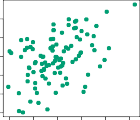

5.2 The Bootstrap
5.2 부트스트랩
The bootstrap is a widely applicable and extremely powerful statistical tool that can be used to quantify the uncertainty associated with a given estimator or statistical learning method. As a simple example, the bootstrap can be used to estimate the standard errors of the coefficients from a linear regression fit. In the specific case of linear regression, this is not particularly useful, since we saw in Chapter 3 that standard statistical software such as R outputs such standard errors automatically. However, the power of the bootstrap lies in the fact that it can be easily applied to a wide range of statistical learning methods, including some for which a measure of variability is otherwise difficult to obtain and is not automatically output by statistical software.
부트스트랩(bootstrap) 은 주어진 추정기(estimator) 또는 통계적 학습 방법과 관련된 불확실성을 정량화하는 데 사용할 수 있는 널리 적용 가능하고 매우 강력한 통계적 도구입니다. 간단한 예제로, 부트스트랩은 선형 회귀 핏에서 생성되는 계수들의 범용 오차(standard errors)를 추정하는 데 사용할 수 있습니다. 선형 회귀라는 구체적인 사례에 있어서 이것은 특별히(particularly) 유용하지 않은데, 왜냐하면 Chapter 3에서 보았듯 R과 같은 표준 통계 소프트웨어가 그러한 추정 오차를 자동으로 출력해주기 때문입니다. 하지만 부트스트랩의 진정한 힘(power)은 그것이 가변성(variability) 척도를 그렇지 않으면(otherwise) 획득하기 어렵거나 혹은 통계 소프트웨어에 의해 자동으로 돌출되지 않는 일부 방법들을 포함하여 넒은 범위의 통계적 학습 방법들에 걸쳐 손쉽게 적용될 수 있다는 사실에 놓여 있습니다(lies in).
In this section we illustrate the bootstrap on a toy example in which we wish to determine the best investment allocation under a simple model. In Section 5.3 we explore the use of the bootstrap to assess the variability associated with the regression coefficients in a linear model fit. 본 섹션에서 우리는 단순한 모델 하에서 최고의 투자 할당(investment allocation)을 판단하고자 희망하는 장난감 예제(toy example)를 활용하여 부트스트랩을 일러스트레이트합니다. Section 5.3에서 우리는 선형 모델 핏 내부의 회귀 계수들과 연관된 가변성을 평가(assess)하기 위해 부트스트랩의 사용을 탐색할 것입니다.
Suppose that we wish to invest a fixed sum of money in two financial assets that yield returns of $X$ and $Y$, respectively, where $X$ and $Y$ are random quantities. We will invest a fraction $\alpha$ of our money in $X$, and will invest the remaining $1 - \alpha$ in $Y$. Since there is variability associated with the returns on these two assets, we wish to choose $\alpha$ to minimize the total risk, or variance, of our investment. In other words, we want to minimize $\text{Var}(\alpha X + (1 - \alpha) Y)$. One can show that the value that minimizes the risk is given by 우리가 무작위적 수위(random quantities)로 주어지는 $X$ 와 $Y$ 의 수익(returns)을 각각 창출하는 두 개의 금융 자산(financial assets)에 대하여, 이미 고정된(fixed) 일정 금액의 투자를 추진한다고 가정해 보겠습니다. 이 상황에서 우리는 투자금 예산 중 일정 $\alpha$ 만큼의 비율(fraction)을 쪼개어 부분적으로 $X$ 쪽에 붓고 남은 잔여 비율인 $1 - \alpha$ 가량은 몽땅 $Y$ 쪽 자산에 털어 넣을 것입니다. 투입된 비용만큼 되돌아오는 양쪽 자산의 수입 수익 체계에는 근본적 변동성(variability)이란 게 속해 있기 때문에, 우리의 최종 소망은 나의 이런 무작위 자산 투자 활동에 연루된 전방위적 투자 위험수당, 다시 말해 분산성(variance) 피해를 최적 비율로 깎아 경감할 수 있는 $\alpha$ 값을 쏙 뽑아 골라내는 것입니다. 이 말을 환언하면(In other words), $\text{Var}(\alpha X + (1 - \alpha) Y)$ 수준의 최소화를 이룩하고 싶다는 것입니다. 다음과 같은 수식은 우리가 처한 본 위험 요소 파이를 극소화해 줄 비율을 정확히 내어준(show) 것입니다.
\[\alpha = \frac{\sigma_Y^2 - \sigma_{XY}}{\sigma_X^2 + \sigma_Y^2 - 2 \sigma_{XY}} \quad (5.6)\]where $\sigma_X^2 = \text{Var}(X), \sigma_Y^2 = \text{Var}(Y)$, and $\sigma_{XY} = \text{Cov}(X, Y)$. In reality, the quantities $\sigma_X^2$, $\sigma_Y^2$, and $\sigma_{XY}$ are unknown. We can compute estimates for these quantities, $\hat{\sigma}X^2$, $\hat{\sigma}_Y^2$, and $\hat{\sigma}{XY}$, using a data set that contains past measurements for $X$ and $Y$. We can then estimate the value of $\alpha$ that minimizes the variance of our investment using 이 수식 안에서 $\sigma_X^2 = \text{Var}(X), \sigma_Y^2 = \text{Var}(Y)$, 그리고 $\sigma_{XY} = \text{Cov}(X, Y)$ 를 대변합니다. 그러나 실전의 상황(In reality)에서 이들이 상징하는 $\sigma_X^2$, $\sigma_Y^2$, 와 $\sigma_{XY}$ 의 치수들은 미궁 속에 감춰진 미지수(unknown)로 기능합니다. 그럼에도 우리는 과거 지난 시점에 실제 측정된 적 있는 $X$ 및 $Y$ 에 대한 측정 데이터를 바탕으로 하여 저 은폐된 실체 계량수들에 대응하는 대체적 기대 예측치 $\hat{\sigma}X^2$, $\hat{\sigma}_Y^2$, 및 $\hat{\sigma}{XY}$ 를 전산적으로 셈할 수 있게 됩니다(compute estimates). 그렇게만 된다면 우리는 곧바로 이 대체 수단을 차용하여 다음을 통해 우리의 자산 출자 분산을 하향 축소시킬 황금 $\alpha$ 수치를 역산출해 맞출 수 있습니다.
\[\hat{\alpha} = \frac{\hat{\sigma}_Y^2 - \hat{\sigma}_{XY}}{\hat{\sigma}_X^2 + \hat{\sigma}_Y^2 - 2 \hat{\sigma}_{XY}} \quad (5.7)\]Figure 5.9 illustrates this approach for estimating $\alpha$ on a simulated data set. In each panel, we simulated $100$ pairs of returns for the investments $X$ and $Y$. We used these returns to estimate $\hat{\sigma}X^2$, $\hat{\sigma}_Y^2$, and $\hat{\sigma}{XY}$, which we then substituted into (5.7) in order to obtain estimates for $\alpha$. The value of $\hat{\alpha}$ resulting from each simulated data set ranges from $0.532$ to $0.657$. Figure 5.9는 가상 시뮬레이션 데이터를 운용해 미지수 $\alpha$ 수위를 추산 평가하는 이러한 식의 연산 접근 방식을 시각적으로 해설합니다. 매 각각의 도식 패널 안에서 우리는 실 투자 대상물 $X$, $Y$ 가 쌍(pairs)으로 결합하여 일으키는 가짜수익 반환치 기록 100건을 연출해 냈습니다. 연이어 우리는 갓 조작 생산된 저 100개의 회수 수익분 가상 지수를 동원하여 $\hat{\sigma}X^2$, $\hat{\sigma}_Y^2$, 및 $\hat{\sigma}{XY}$ 이라는 추정 부품을 재조립해냈으며, 그 즉시 부품들을 본래 (5.7) 공식 안에 끼워 맞춰(substituted into) 치환시킴으로써 마침내 타겟 추산 $\alpha$ 변수를 추려 달성해 냅니다. 이 과정을 통해 각각의 고유 시뮬레이션 데이터 배포 판으로부터 역도출된 실질 연산 $\hat{\alpha}$ 값의 범주는 대략 최저 $0.532$ 지표선에서 출발하여 최고 $0.657$ 지표 영역에 이르기까지 펼쳐집니다.
It is natural to wish to quantify the accuracy of our estimate of $\alpha$. To estimate the standard deviation of $\hat{\alpha}$, we repeated the process of simulating 100 paired observations of $X$ and $Y$, and estimating $\alpha$ using (5.7), 1,000 times. We thereby obtained 1,000 estimates for $\alpha$, which we can call $\hat{\alpha}1, \hat{\alpha}_2, \dots, \hat{\alpha}{1000}$. The left-hand panel of Figure 5.10 displays a histogram of the resulting estimates. For these simulations the parameters were set to $\sigma_X^2 = 1, \sigma_Y^2 = 1.25$, and $\sigma_{XY} = 0.5$, and so we know that the true value of $\alpha$ is $0.6$. We indicated this value using a solid vertical line on the histogram. 그렇다면 인간 본성상 바로 우리가 뽑아낸 저 $\alpha$ 예측물 자체의 판단 정밀 정확도(accuracy) 크기가 어떻게 되는지 궁금해하며 계량적 정량화를 소원하는 일은 어쩌면 매우 자연스럽기까지 합니다(natural). 실물 $\hat{\alpha}$ 지수치가 머금은 근본적인 표준 편차(standard deviation)의 깊이를 추적 계산하려는 일념하에, 우리들은 조금 전 가상 설계했던 변수 두 짝쌍의 수입 지표 100회분 실험 도출 방식과 그것을 공평 무사한 단일 공식 (5.7)을 매개로 하여 하나의 기대 분율 $\alpha$ 계수로 집약시켰던 해당 절차 일련 전반을 단숨에 연속 $1,000$ 십자포화 반복 구동시킴으로써, 그 일련의 과정 속에서 장기적 총체 1,000회분 $\alpha$ 투사 예측 결과의 산물, 즉 $\hat{\alpha}1, \hat{\alpha}_2, \dots, \hat{\alpha}{1000}$ 로 이름 붙여 불릴 일만 개의 흔적 군집을 긁어모았습니다. 도표 안 Figure 5.10 왼쪽 패널 측에 우뚝 선 히스토그램은 저 결집 결과 수치들의 시지각적 잔상물입니다. 본 허구적 데이터의 무대 조형에 있어서 핵심 속성 통제 요소 파라미터 계기 편향은 단단히 확정 조작되었는데, 이 매개 수위가 바로 $\sigma_X^2 = 1, \sigma_Y^2 = 1.25$ 와 공분산 $\sigma_{XY} = 0.5$ 환경으로 사전 픽스 설정(set)되었던 바, 그로 인한 철저한 논증 수학적 연산 회로 귀결상 실제 진리 $\alpha$ 정수 지수는 필연코 $0.6$ 이란 결론부지에 낙착됨을 이미 지식으로 파악하고 있습니다(we know). 해당 단호한 진실 절대치는 히스토그램 위에서 꼿꼿한 고형체 실선축 수직 라인(solid vertical line)에 투영 지시되어 나타납니다.

FIGURE 5.9. Each panel displays $100$ simulated returns for investments X and Y . From left to right and top to bottom, the resulting estimates for $\alpha$ are $0.576, 0.532, 0.657$, and $0.651$. FIGURE 5.9. 각 측 패널 안에는 각각 $X$ 와 $Y$ 자산에 투신된 환수 데이터가 $100$ 단위로 가공 시뮬레이팅 도해됩니다. 상단부 왼쪽부터 출발해 우편 측 타일로 건너가는 하향식 순차에 의거하여, 각각의 시뮬 판도 개별 $\alpha$ 계산 추정 계수는 $0.576, 0.532, 0.657$ 이자, 마지막은 $0.651$ 수위치를 점령합니다.
The mean over all $1,000$ estimates for $\alpha$ is $1,000$ 개 전체를 아우르는 통산 $\alpha$ 투사 추정 결괏값의 모든 자산 평가 총균 평균 치수는
\[\bar{\alpha} = \frac{1}{1000} \sum_{r=1}^{1000} \hat{\alpha}_r = 0.5996\]very close to $\alpha = 0.6$, and the standard deviation of the estimates is 진실점 $0.6$ 에 극도로 인접한 상황이며(very close to), 그 오차 유격 추정물들의 평균 표준 편차 널뛰기 치수는
\[\sqrt{\frac{1}{1000 - 1} \sum_{r=1}^{1000} (\hat{\alpha}_r - \bar{\alpha})^2 } = 0.083\]This gives us a very good idea of the accuracy of $\hat{\alpha}$: $\text{SE}(\hat{\alpha}) \approx 0.083$. So roughly speaking, for a random sample from the population, we would expect $\hat{\alpha}$ to differ from $\alpha$ by approximately $0.08$, on average. 결과적으로 이것을 말미암아 우리들은 평가 산물 $\hat{\alpha}$ 정밀도 수준이 지니는 대단히 유효한 안목(good idea) 즉: 표준에러 수위 오차가 대략 $0.083$ 주변으로 포진함($\text{SE}(\hat{\alpha}) \approx 0.083$)을 직관적으로 관철합니다. 그렇다면 즉 이 말은 곧 어떤 전체 인구 속단 중 단지 하나의 표본 샘플만 추출한다 가정하면 우리들은 $\hat{\alpha}$ 가 대략적 수준 평균치 기준으로 대강 진짜 $\alpha$ 값에서 수치 $0.08$ 의 어간의 격차율로 어긋나는(differ from) 모습으로 발현되리라고 상기 내다보게 됨을 대략적(roughly speaking) 통계 소회로 피력할 수 있습니다.
In practice, however, the procedure for estimating $\text{SE}(\hat{\alpha})$ outlined above cannot be applied, because for real data we cannot generate new samples from the original population. However, the bootstrap approach allows us to use a computer to emulate the process of obtaining new sample sets, so that we can estimate the variability of $\hat{\alpha}$ without generating additional samples. Rather than repeatedly obtaining independent data sets from the population, we instead obtain distinct data sets by repeatedly sampling observations from the original data set . 그러나 안타깝게도 현실 필드(In practice) 속에서 우리가 앞서 장구하게 외형을 빚어가며 일별 제시해 주었던 $\text{SE}(\hat{\alpha})$ 오차 측정의 이 화려한 전산 수속 과정은 차마 실질 데이터를 조우했을 때 차용할 수 없는(cannot be applied) 허울로 전파됩니다. 왜일까요? 진짜 자연 세계에서는 절대 최초 기저 바탕 인구 총집합 풀(original population)에서 무한 복제로 새 표본을 창조(generate) 발산 연성해 낼 조물주적 권능 따윈 없기 때문입니다! 이 막장적 단절 앞에서 바로 부트스트랩(bootstrap) 공정이 한 가닥 불빛 구원자처럼 하강해주고 이 컴퓨터 문명은 그것을 지렛대 삼아 새로운 다발성 인원 모집 과정의 절차 복붙 모방 시스템(emulate) 메커니즘 도구로 편승 활용합니다. 더는 무모하게 부가 표본 모집 창출에 연연하지 않되 무한 반복 교차 추정 $\hat{\alpha}$ 도출 진동 변동성 포착 분석을 성사시킬 방편을 고안한 것인데, 그건 허무맹랑한 우주 거대 외곽 원형 인구 풀 바깥에서 새 데이터 독립 파편을 찾아 계속 외곽 수급에 나서기보다 우리 호주머니수중에 원래 지니고 입수 확보했던 진짜 초기 최초 한정판(원형 기초 데이터) 본질 안에서만 시선 이동 후, 내부의 인원들을 뺑뺑이 재복원 중복 모집시킴으로써 수많은 각기 고유한 파생 쪼가리들을 획득해 내는 꼼수 전략입니다.
This approach is illustrated in Figure 5.11 on a simple data set, which we call $Z$, that contains only $n = 3$ observations. We randomly select $n$ observations from the data set in order to produce a bootstrap data set, $Z^{1}$. The sampling is performed _with replacement_, which means that the same observation can occur more than once in the bootstrap data set. In this example, $Z^{1}$ contains the third observation twice, the first observation once, and no instances of the second observation. Note that if an observation is contained in $Z^{1}$, then both its $X$ and $Y$ values are included. We can use $Z^{1}$ to produce a new bootstrap estimate for $\alpha$, which we call $\hat{\alpha}^{1}$. This procedure is repeated $B$ times for some large value of $B$, in order to produce $B$ different bootstrap data sets, $Z^{1}, Z^{2}, \dots, Z^{B}$, and $B$ corresponding $\alpha$ estimates, $\hat{\alpha}^{1}, \hat{\alpha}^{2}, \dots, \hat{\alpha}^{B}$. We can compute the standard error of these bootstrap estimates using the formula 바로 이런 황당무계한 해결법을, 전체 요원이 고작 $n = 3$ 명의 관측물로 빈약하게 제한 구성된, 가칭 $Z$ 라고 이름 붙일 한 보잘것없는 초소형 시각 샘플 예제 데이터를 토대로 삼아 Figure 5.11 상에 묘사도 그려냅니다(illustrated). 이 구상 안에서 우리들은 부트스트랩 실험 세트인 이른바 신규 데이터 묶음인 $Z^{1}$ 하나를 주조 연성해 뽑아낼 요량으로 전체 원본 풀에서 똑같은 수치인 $n$ 개의 개체를 뽑아 랜덤 무작위 소환 단행합니다. 이때 뽑기 행태의 규칙 기만점은 언제나 절대 무조건 과거 뽑혔던 카드도 본래 자리로 항시 재투입(with replacement) 뒤섞여 반복 투과 복원되면서 실시되는 기만성에 있습니다, 이 말뜻 인즉 같은 동일 타겟물이 차기 부트스트랩 구성진 모집 과정 도출에 걸쳐 얼마든지 계속 1차례를 상회해 빈번히 출몰 투입(occur) 복원 재사용될 수 있다는 걸 지칭합니다. 작금의 구체적 도식에서 $Z^{1}$ 데이터 구조 결과 양상엔 3번째 멤버 표본 대상물이 그 자리를 두 번($2$) 꿰차고 1번 관측물이 고작 한 번($1$) 자리매김하고 안타까운 2번 관측 대상자는 그 어떤 발도 못 디민 채 흔적을 누락(no instances) 묘사합니다. 여기서 자각할 사안 한 가지: 어떤 관측치 존재물이 만에 하나 $Z^{1}$ 내무에 입성하게 되면 반드시 거기에 얽매인 모든 해당 표본 개체의 $X$ 자산 그리고 $Y$ 자산 계량 점수 데이터도 쌍으로 엮어 모조리 통째 묶임 포함되어 딸려 옴을 상기하세요. 곧이어 우리는 본 파생 결집물 $Z^{1}$ 조직 데이터를 엔진으로 가동시키면서 그로부터 $\alpha$ 를 파악 셈법 계산을 거쳐 신선한 첫술용 새 부트스트랩 예언 수치 $\hat{\alpha}^{1}$ 라 자칭 명명하게 된 결과를 뽑을 자격을 얻습니다. 바로 이러한 판도의 복제 뺑뺑이 재생 노가다 과정을 거대한 무제한성 계수 지표 수량($B$)만큼 되먹여 $B$ 회전을 루틴 반복(repeated) 실시 조장하여 종단적으로 각기 분별되는 다수의 거대 부트스트랩 풀 조직체인 $Z^{1}, Z^{2}, \dots, Z^{B}$ 더미군을 모래알처럼 구축 조성 산출하고 그 틈에서 병렬 생성 공정 대응(corresponding) 도출되는 총체 $B$ 번 분율 $\alpha$ 추정 산출 값의 열매체 $\hat{\alpha}^{1}, \hat{\alpha}^{2}, \dots, \hat{\alpha}^{B}$ 지표들을 포획 추수 성공하게 되는 겁니다. 그러면 최종적으로 우리들은 앞선 공식 대입 조립만으로 방탄무구 철벽 신뢰성을 더해줄 이 다발적 신생 부트스트랩 결과들의 편차 파급 오류(standard error) 측정치를 수수하게 도출 계산 재현할 기지력을 확보(compute) 완료합니다:
\[\text{SE}_B(\hat{\alpha}) = \sqrt{\frac{1}{B - 1} \sum_{r=1}^B \left( \hat{\alpha}^{*r} - \frac{1}{B} \sum_{r'=1}^B \hat{\alpha}^{*r'} \right)^2} \quad (5.8)\]This serves as an estimate of the standard error of $\hat{\alpha}$ estimated from the original data set. 이것은 곧 오리지널 원본 초기 배포 데이터 세트 구조 환경 차원에서 파생 추산 평가된 당해 $\hat{\alpha}$ 예측물의 표준편차 지표 파급 오차 한계망 추산치로서 훌륭하게 대응 기능(serves) 수행해나갑니다.
The bootstrap approach is illustrated in the center panel of Figure 5.10, which displays a histogram of $1,000$ bootstrap estimates of $\alpha$, each computed using a distinct bootstrap data set. This panel was constructed on the basis of a single data set, and hence could be created using real data. Note that the histogram looks very similar to the left-hand panel, which displays the idealized histogram of the estimates of $\alpha$ obtained by generating $1,000$ simulated data sets from the true population. In particular the bootstrap estimate $\text{SE}(\hat{\alpha})$ from (5.8) is $0.087$, very close to the estimate of $0.083$ obtained using $1,000$ simulated data sets. The right-hand panel displays the information in the center and left panels in a different way, via boxplots of the estimates for $\alpha$ obtained by generating $1,000$ simulated data sets from the true population and using the bootstrap approach. Again, the boxplots have similar spreads, indicating that the bootstrap approach can be used to effectively estimate the variability associated with $\hat{\alpha}$. 이 위대하신 부트스트랩 접근 시야의 기법 효모는 Figure 5.10 중앙 허리 패널에서 절찬리에 공개 묘사되며, 이 그림 내부 막대 히스토그램은 앞선 구상 기반 각기 다른 파생 부트스트랩 꼬리 데이터군에 의해 각 별건 별 셈법 산출 통산해 일궈 모은 다발성 추정 표본 수량 $1,000$ 개 $\alpha$ 변수의 축적 통산 조형 형상을 입증 개시합니다. 해당 중축의 패널 그림이 그 옛날 찌질하고 비참한 단 한 건의 유일 데이터 실체(single data set) 하나를 기단(basis) 발판으로 솟은 산물임에 유의하면, 이런 경이로움 즉 필드 실전 데이터 속성에서도 능히 이런 복제 수치 마법 조작 산물이 빚어져 구성(created) 산출될 여지가 있음에 숙고합시다. 무엇보다 특기할 경천동지할 점으로서 본 해당 횡축 그래프의 구조 그림자는 마치 우측 절대 진계 하늘 창조주의 손길로 거대한 백성 무리 기원수(true population) 군집 원형 인구단 속에서 직접 한 땀 손수 복제 창조해 1,000건이나 짜내 획득 결집한 좌측 이데아 최고 이상(idealized)의 그림자와 소름돋을정도로 육안 구별이 얽힌 유사 분산 체형(looks very similar) 모양새를 방증 노출 중이란 대목입니다. 특히 위 수식 (5.8) 과정 결과의 산물로 떨어져 내린 본 자체 부트스트랩 기법 연산 예측기 $\text{SE}(\hat{\alpha})$ 수치가 고작 $0.087$ 점수에 준한다는 점과 그것은 가상으로 일궜던 1,000개 허상 데이터의 조작 맹신 예측 지름차 $0.083$ 주변 부근으로 흡인되어 맹렬히 파고든다는 사실 인접도(very close to) 자체에 귀 기울이십시오. 한편 맨 오른쪽 위치 구석 패널 무대는 지금껏 살펴왔던 두 방면 중앙, 좌측면 정보들의 함의 자체를, 부트스트랩 방식과 더불어 거대 실상 인구 무리 발췌 추출로 축적 누적 연산시켜 달성해 얻은 $\alpha$ 파라미터 예측 횡단 자료의 변위 폭 궤도 분산도를 다른 대안적 양상 투사 툴 즉 상자수염그림(박스 스캐치 boxplots) 형식을 등용시켜 변조 반영 재각인합니다. 언제나 그랬듯이 재차 검토 반복하더라도(Again), 쌍으로 병치된 두 상자 수염 조형 분산 전개 폭(spreads)은 대단히 닮아 흡사성을 공유 진동 유지함을 발견 가능하며 이 명쾌한 방증적 대변 사실 자체를 통하여 우리가 고작 쥐고 펴는 알량한 부트스트랩 재복제 기술 하나일지언정 곧 그것 단일로 우리가 필사적 타겟으로 표적화 삼은 가변성 지표인 $\hat{\alpha}$ 오차 변위의 널뛰기 심도 측정의 미션을 실로 기깔나게 매우 효과적으로 해결 적중 타격 관수시킬 용도로 쓰일 만하다(can be used to effectively) 라는 통계 확신으로 수렴 보장됨을 이 그림들이 대신 징후(indicating) 타전해 줍니다.

FIGURE 5.11. A graphical illustration of the bootstrap approach on a small sample containing n = 3 observations. Each bootstrap data set contains n observations, sampled with replacement from the original data set. Each bootstrap data set is used to obtain an estimate of $\alpha$. FIGURE 5.11. 딸랑 3명($n=3$) 의 왜소 빈약 투입군으로 축조 구성된 왜소한 데이터 쪼가리 표본 위에서 자행된 거대한 복제 시스템 창조 부트스트랩 방법론 공방의 그래픽 설명도. 각각 구동되어 파편 축출 산물로 쏟아진 매 부트스트랩 샘플 단위 결과 세트체 그룹 내에는 여지없이 동일 규격 체적 $n$ 정량 개체수가 포화되며 그 발원 추출 조달 근원은 복원 추출 방식 체계(sampled with replacement) 를 끼고 오리지널 기저 데이터 표본에서 끊임없이 길어 부어 마련 취합됩니다. 그런 일련의 각각 뭉텅이 결과 집단 조작 소스군을 필두 조밀 거름막으로 이용 통과 분쇄시켜 최종 우리 타겟이던 $\alpha$ 예측 오차지표물을 일구어(obtain) 냅니다.